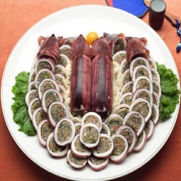

관광지
1. 속초 해수욕장
2007년 말 속초해수욕장에 산호초의 환상적인 꿈과 물고기의 역동적 희망,
그 꿈과 희망을 전해 주는 소라를 형상화한 조각품이 설치돼 여행객들의 기념사진 촬영지로도 각광받고 있다.
속초해수욕장은 속초시내에서 가깝고 수질이 깨끗한 곳이라 동해안에서도 인기가 높은 곳이다.
백사장에는 산책하기에 좋은 목재데크도 설치되어 있다. 해변 앞에는 ‘조도’라는 섬이 떠 있어 풍광을 더욱 멋지게 만들어 준다.
해수욕장 주위에 설악산·척산온천·영랑호·청초호·청호동갯배·아바이마을·외옹치항 등
함께 들러볼 곳이 다수 있다는 것도 속초해수욕장의 매력 포인트다.
인기드라마 <가을동화>의 일부 장면이 이 해수욕장에서 촬영되기도 했다.
주차장과 야영장·오토캠핑장·관광안내소·화장실·급수대·음수대·지압보도·배구장·미니축구장·샤워장·탈의장·
L형 텐트 등 편의시설을 고루 갖추었다.
2. 설악산 국립공원
천의 얼굴을 가진 설악산은 봄이면 진달래와 철쭉이 만발하고, 여름이면 신록의 푸르름이 협곡과 어우러져 장관을 이룬다.
가을에는 붉게 물든 단풍이 암봉 사이로 불타오르며, 겨울에는 환상의 파노라마를 연출할 정도의 설국을 이룬다.
이렇게 계절마다 다양한 색깔로 바꿔가며 아름다운 경치를 보여주는 설악산은 눈과 바위의 산으로 금강산에 버금가는 남한 제일의 명산이다.
일반적으로 지리산은 장중한 육산의 능선이, 주왕산은 기암절벽, 그리고 오대산 소금강은 계곡미가 가장 뛰어난 자랑이라면, 설악산은 이 세 산들이 가진 특징을 모두 갖춘 명산이다.
그래서 사람들은 설악산을 '산중 제일 미인'이라 부른다. 설악이란 지명은 겨울에 흰 눈이 덮인 모습이 특히 인상적이어서 지어진 이름으로 설봉산, 혹은 설산이란 이름으로 불렸다.
하지만 설악산의 진미는 역시 단풍이다. 비록 내장산 단풍이 아름답기는 하지만 기암괴석, 맑은 계곡 등의 요소가 두루 갖추어진 설악산의 단풍 풍경은 일명 '단풍 제일명산'으로 꼽을 수밖에 없다.
과거 우리나라에서는 큰 산을 보통 '악산(岳山)'이라 하였는데, 그 중 바위가 높이 솟은 산 이름에 보통 '악(岳)' 자가 들어 있는 경우가 많았다.
조선시대 절집을 떠도는 승려와 풍수를 공부하는 지관들은 서울의 관악산(冠岳山), 충주의 월악산(月岳山), 전주 모악산(母岳山),
원주 치악산(雉岳山), 개성의 송악산(松岳山), 속초의 설악산(雪嶽山)을 6대 악산으로 뽑았다. 설악산 일대는 세계적으로 희귀한 자연자원의 분포 서식지로
1982년 유네스코(UNESCO)에 의해 우리나라 최초로 생물권보전지역으로 설정되었으며, 2005년 12월 IUCN(세계자연보전연맹)은 설악산 일대를 '카테고리
Ⅴ(경관보호구역)'에서 '카테고리 Ⅱ(국립공원)'로 승격시켜, 그 가치를 인정하였다.
먹거리
1. 물회
2. 성게 비빔밥
3. 오징어순대 & 아바이순대
